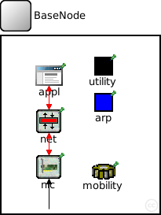
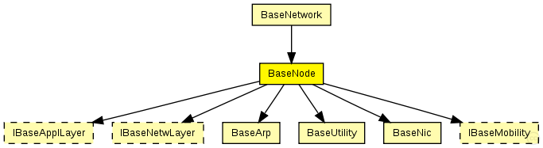
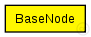

This documentation is released under the Creative Commons license
This documentation is released under the Creative Commons license(no description)
The following diagram shows usage relationships between types. Unresolved types are missing from the diagram. Click here to see the full picture.
The following diagram shows inheritance relationships for this type. Unresolved types are missing from the diagram. Click here to see the full picture.
If a module type shows up more than once, that means it has been defined in more than one NED file.
| BaseNetwork (compound module) | (no description) |
| Name | Type | Default value | Description |
|---|---|---|---|
| applType | string |
type of the application layer |
|
| netwType | string |
type of the network layer |
|
| mobType | string |
type of the mobility module |
| Name | Value | Description |
|---|---|---|
| display | bgb=,,white,, |
| Name | Direction | Size | Description |
|---|---|---|---|
| radioIn | input |
gate for sendDirect |
| Name | Type | Default value | Description |
|---|---|---|---|
| utility.coreDebug | bool |
debug switch for the base framework |
|
| arp.coreDebug | bool |
debug switch for the core framework |
|
| mobility.coreDebug | bool |
debug switch for the core framework |
|
| mobility.x | double |
x coordinate of the nodes' position (-1 = random) |
|
| mobility.y | double |
y coordinate of the nodes' position (-1 = random) |
|
| mobility.z | double |
z coordinate of the nodes' position (-1 = random) |
|
| appl.debug | bool |
debug switch |
|
| appl.headerLength | int |
length of the application message header (in bits) |
|
| net.debug | bool |
debug switch |
|
| net.stats | bool |
stats switch |
|
| net.headerLength | double |
length of the network packet header (in bits) |
|
| nic.mac.notAffectedByHostState | bool | false | |
| nic.mac.coreDebug | bool |
debug switch |
|
| nic.mac.headerLength | double |
length of the MAC packet header (in bits) |
|
| nic.mac.slotDuration | double |
how long is a slot? [s] |
|
| nic.mac.difs | double |
maximum time between a packet and its ack [s] |
|
| nic.mac.maxTxAttempts | double |
maximum number of transmission attempts |
|
| nic.mac.queueLength | int |
length of the MAC queue |
|
| nic.mac.defaultChannel | double |
default channel |
|
| nic.mac.bitrate | double |
bit rate [bps] |
|
| nic.mac.txPower | double |
tx power [mW] |
|
| nic.mac.contentionWindow | double |
contention window |
|
| nic.phy.coreDebug | bool | ||
| nic.phy.headerLength | int | 0 |
defines the length of the phy header (/preamble) |
| nic.phy.usePropagationDelay | bool |
Should transmission delay be simulated? |
|
| nic.phy.thermalNoise | double |
the strength of the thermal noise [dBm] |
|
| nic.phy.useThermalNoise | bool |
should thermal noise be considered? |
|
| nic.phy.analogueModels | xml |
Specification of the analogue models to use and their parameters |
|
| nic.phy.decider | xml |
Specification of the decider to use and its parameters |
|
| nic.phy.sensitivity | double |
The sensitivity of the physical layer [dBm] |
|
| nic.phy.maxTXPower | double |
The maximum transimission power of the physical layer [mW] |
|
| nic.phy.timeRXToTX | double |
switchTimes [s]: |
|
| nic.phy.timeRXToSleep | double | ||
| nic.phy.timeTXToRX | double | ||
| nic.phy.timeTXToSleep | double | ||
| nic.phy.timeSleepToRX | double | ||
| nic.phy.timeSleepToTX | double | ||
| nic.phy.initialRadioState | int |
module BaseNode { parameters: string applType; //type of the application layer string netwType; //type of the network layer string mobType; //type of the mobility module @display("bgb=,,white,,"); gates: input radioIn; // gate for sendDirect submodules: utility: BaseUtility { parameters: @display("p=130,38,rect;b=24,24,,black,,"); } arp: BaseArp { parameters: @display("p=130,84,rect;b=24,24,,blue,,"); } mobility: <mobType> like IBaseMobility { parameters: @display("p=130,172;i=cogwheel2"); } appl: <applType> like IBaseApplLayer { parameters: @display("p=60,50;i=app"); } net: <netwType> like IBaseNetwLayer { parameters: @display("p=60,108;i=prot1"); } nic: BaseNic { parameters: @display("p=60,166;i=iface"); } connections: nic.upperGateOut --> net.lowerGateIn; nic.upperGateIn <-- net.lowerGateOut; nic.upperControlOut --> { @display("ls=red;m=m,70,0,70,0"); } --> net.lowerControlIn; nic.upperControlIn <-- { @display("ls=red;m=m,70,0,70,0"); } <-- net.lowerControlOut; net.upperGateOut --> appl.lowerGateIn; net.upperGateIn <-- appl.lowerGateOut; net.upperControlOut --> { @display("ls=red;m=m,70,0,70,0"); } --> appl.lowerControlIn; net.upperControlIn <-- { @display("ls=red;m=m,70,0,70,0"); } <-- appl.lowerControlOut; radioIn --> nic.radioIn; }
This documentation is released under the Creative Commons license